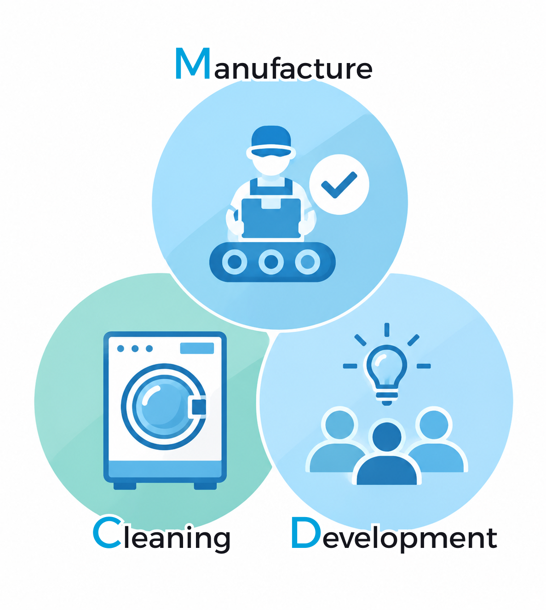

M.C.Dは、ジーンズの洗い加工を専門に行う生産拠点で、国内でも最大規模を誇ります。
ジーンズの仕上がりを左右する洗い加工では、素材やデザインに合わせた細かな調整と、安定した品質を実現する高い技術力が求められます。M.C.Dでは、これまで培ってきた技術とノウハウを生かしながら、生産性の向上にも取り組んでいます。
また、現在のものづくりにとどまらず、これからのジーンズづくりを見据えた研究・開発にも力を入れています。新たな加工技術や生産方法を追求し、次世代のものづくりにつながる取り組みを進めています。
それらの役割から、Manufacturing（製造）、Cleaning（特殊洗い加工）、Development（開発）。
それぞれの頭文字を取り、「M.C.D」と名付けられました。
ウォッシュ加工をはじめとする洗い加工の研究開発に取り組み、常に新たな技術や表現に挑戦しています。
ジーンズを中心とした衣料品の洗い加工において、1日5,000枚、年間120万枚の生産能力を有しています。
ストーンウォッシュやケミカルウォッシュ、染色・脱色加工、レーザー加工など、多様な加工に幅広く対応。
さらに、地球環境の持続可能な発展を目指し、水・熱・薬剤の使用量を削減するなど、環境負荷を抑えた最新のサステナブル技術を取り入れたモノづくりに取り組んでいます。
2022年には、従来の水使用量を95％削減し、オゾンガス加工と組み合わせた独自の加工技術で特許を取得しました。
さらに、加工工程で発生する排水の再利用や、排出される汚泥のリサイクル、従業員の作業負荷を軽減するレーザー加工技術の開発にも取り組んでいます。
環境への負荷を抑えながら、より効率的で持続可能なモノづくりを追求しています。
国内外を舞台にグローバルな事業を展開するM.C.D。
挑戦を恐れない精神と、細部までこだわり、人の心に残るものを生み出すモノづくりの姿勢。
その二つのスピリットが融合することで、これまでにないデニム製品が生み出されています。
秋田の地から、世界へ。M.C.Dの最先端のデニムが発信されています。
| 住所 | 〒011-0951 秋田県秋田市土崎港相染町字浜ナシ山17-3 |
|---|---|
| 電話番号 | 018-857-3111 |
| FAX番号 | 018-857-3115 |
| 事業内容 | ジーンズを中心とする衣料品の加工・開発 |
| 代表取締役 | 澤上 順二 |
| 設立 | 1989年9月 |
※営業・セールス目的の電話・FAXによるご連絡はご遠慮いただいております。